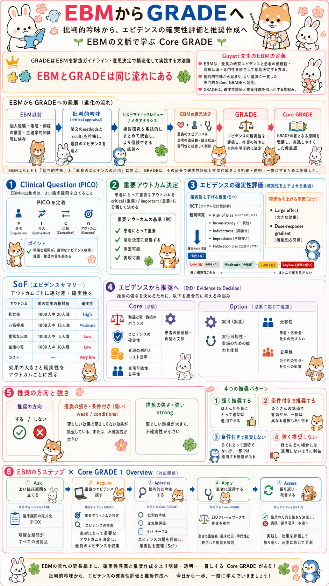

EBMからGRADEへ：クリック可能マップ試作
画像上の領域にフォーカスまたはポインタを置くとリンク範囲が表示されます。モバイルでは小さな上段領域を画像上から外し、下の同等リンク一覧を主導線にします。

01 EBM以前／EBMの歴史 02 批判的吟味 03 システマティックレビュー／メタアナリシス 04 EBMの意思決定 05 GRADE 06 Core GRADEとは 07 MAP 1 Clinical Question（PICO） 08 MAP 2 重要アウトカム 09 MAP 3 エビデンスの確実性評価 10 SoF・効果の大きさ・確実性 11 MAP 4 Evidence to Decision（EtD） 12 MAP 5 推奨の方向と強さ 13 4つの推奨パターン 14 MAP 6 EBM 5ステップ × Core GRADE本番統合時は、同一HTML内の章には window.showContent(contentId) を使い、別HTMLページだけ通常リンクで開きます。画像だけに依存せず、下のリンク一覧を必ず残してください。